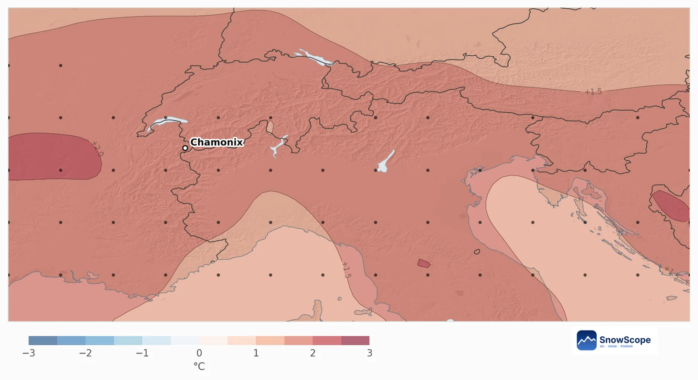
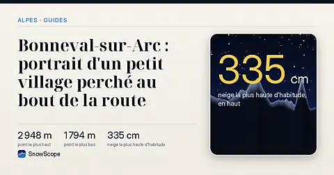

Chamonix en décembre 2026 : signal chaud, signal humide, pas de verdict net pour la neige
Les sommets supérieurs de Chamonix se sont réveillés avec 27 cm le 10 novembre, mais la station mi-montagne n'en compte que 1 cm et la base est dénudée. La prévision saisonnière de décembre penche vers le chaud et légèrement humide, mais ces deux forces s'annulent presque—le mois devrait rester proche de son total de neige habituel.
Consultez les prévisions neige en temps réel pour Chamonix sur l'application SnowScopeHauteurs de neige, alertes poudreuse et carte 3D, gratuitement.
L'altitude décide du tableau maintenant
La neige de début novembre ne tient que là où il fait froid. Le sommet des Grands Montets à 2 768 m a 27 cm après 15 cm tombés la semaine précédente. Descendez 800 mètres à la mi-montagne (2 001 m) et vous trouvez juste 1 cm, malgré 10 cm arrivés les mêmes sept jours. La base à 1 234 m n'en montre rien.
C'est l'histoire d'une ligne de neige haute. Sur la carte SnowScope, 47 pour cent de la fenêtre de 60 km autour de Chamonix est blanc—le massif du Mont-Blanc et le haut Valais—mais les vallées restent dénudées. Les sept prochains jours pourraient pousser 26 cm supplémentaires en zone haute et 5 cm en mi-montagne.
Pas de schéma clair dans les montagnes pour l'instant
Quand SnowScope compare chaque zone de montagne avec ses 24 décembers passés, la plupart des zones autour du Mont-Blanc n'affichent pas de signal fort. Quatre-vingt-six pour cent du terrain manque d'une tendance claire. Quatorze pour cent penche vers un déficit (surtout les Préalpes basses près d'Annecy), et rien ne se distingue comme naturellement plus enneigé.
À hauteur de mi-montagne, la chance d'avoir plus de neige fraîche qu'en décembre typique est 45 pour cent. Un décembre normal apporte 68 cm de neige nouvelle là ; la perspective de cette année suggère 66 cm. Au 31 décembre, la profondeur typique est 92 cm et la profondeur prévue 85 cm, très probablement entre 71 et 103 cm.

Chaleur et humidité dans un tir à la corde
Le système saisonnier européen sur 51 simulations s'accorde fortement sur une chose : décembre sera chaud. Le réchauffement moyen dans la région est 1,6 °C au-dessus de la normale, avec 84 pour cent des simulations plus chaud. Les précipitations sont 11 pour cent plus humides que les habituels 128 mm, favorisées par 65 pour cent de l'ensemble.
Ces signaux tirent dans des directions différentes. L'altitude élevée maintient les précipitations en neige ; les altitudes plus basses paient le prix d'un mois plus chaud sous forme de pluie et d'une ligne de neige montante. Dans les 45 décembers passés de Chamonix, la profondeur de neige ici a suivi les précipitations bien plus étroitement (corrélation 0,94) que la température, ce qui explique pourquoi la prévision atterrit près de la normale—les deux effets s'annulent largement.


Trois décembers qui ressemblaient à ceci
Les trois décembers passés dont la météo correspondait le plus à cette prévision sont 2002, 2022 et 2014. Pourtant, ces trois-là n'étaient pas semblables pour la neige. Cette honnêteté est importante : la prévision penche légèrement les probabilités seulement ; elle ne verrouille pas l'issue du mois.
La leçon clé est la variabilité. Les années chaudes ne veulent pas toujours dire une neige pauvre une fois l'humidité prise en compte. Comptez d'abord sur le terrain haut—le sommet des Grands Montets et les approches du glacier—et traitez les pistes basses comme un bonus. Consultez la prévision 7 jours avant de décider de voyager.

Ce qu'il faut surveiller dans les semaines qui viennent
Début décembre est en équilibre. Le manteau fin en mi-montagne pourrait se consolider, ou la chaleur de décembre pourrait pousser la ligne de pluie plus haut. La différence entre un bon mois et un mois maigre peut dépendre de si décembre penche plus vers la chaleur ou l'humidité dans sa première quinzaine.
Utilisez la carte SnowScope pour suivre la ligne de neige à mesure que la prévision 7 jours évolue. Cette couche vous dira plus sur quelles pistes de vallée sont skiables que n'importe quelle prévision saisonnière unique ne peut le faire.
Conseils aux skieurs
- Commencez vos journées de décembre sur le sommet des Grands Montets et le terrain du glacier ; l'altitude élevée verrouille les meilleures probabilités de neige.
- Surveillez de près la prévision 7 jours pour les décalages de ligne de pluie. Un coup de chaleur mi-mois pourrait pousser la pluie plus haut et réduire la couverture en mi-montagne.
- La perspective couvre 71 à 103 cm à la fin du mois en mi-montagne ; utilisez le bas de cette plage pour planifier prudemment au début, le haut à mesure qu'il se déploie.
- Avant de réserver fin décembre, comparez la prévision 7 jours à ce moment avec cette perspective saisonnière. Les prévisions saisonnières sont des guides, pas des garanties.
- Superposez la carte de profondeur de neige SnowScope chaque semaine pour voir où la ligne de neige se pose à mesure que décembre progresse.
À propos de ces chiffres
Les hauteurs de neige des stations sont la neige la plus épaisse sur le haut du domaine à la date indiquée ; ce sont des estimations pour une zone, pas une mesure en un point. Les prévisions peuvent changer. Consultez toujours le bulletin d'avalanche officiel avant le hors-piste.
Citer ce bulletin
Pour la recherche, l'enseignement ou la presse : chiffres et graphiques réutilisables librement sous CC BY 4.0 avec cette citation.
SnowScope (2026), Chamonix en décembre 2026 : signal chaud, signal humide, pas de verdict net pour la neige, https://snowscope.app/blog/fr/2026/11/chamonix-december-2026-snow-outlook.html, consulté le 2026-11-10
SnowScope (Atlas Labs). (2026, November 10). Chamonix en décembre 2026 : signal chaud, signal humide, pas de verdict net pour la neige. SnowScope snow reports. https://snowscope.app/blog/fr/2026/11/chamonix-december-2026-snow-outlook.html
BibTeX
@misc{snowscope2026chamonixdecember2026snow,
author = {{SnowScope (Atlas Labs)}},
title = {Chamonix en décembre 2026 : signal chaud, signal humide, pas de verdict net pour la neige},
year = {2026},
month = nov,
howpublished = {\url{https://snowscope.app/blog/fr/2026/11/chamonix-december-2026-snow-outlook.html}},
note = {Published 2026-11-10 09:29 UTC; accessed 2026-11-10}
}· CC BY 4.0 · Méthodes, données et outils →
Suivre Chamonix
Gratuit : un message quand la neige arrive, et la météo chaque matin.
Autres bulletins neige

Bonneval-sur-Arc se situe à 1 794 m dans la haute vallée de l'Arc, fermée par l'Iseran en hiver. L'épaisseur de neige varie de 99 cm en bas à 335 cm au sommet. Données de 46 hivers passés, novembre 2026.

Verbier est-il fait pour les débutants ? Quand la neige est-elle la meilleure ? Comment y aller ? Réponses sur les 4 Vallées et 46 hivers passés.

Des paysans walser au Weißer Ring : les dates qui ont fait Lech Zürs, puis notre historique de neige hier et aujourd'hui, les quinze premiers de 46 hivers passés contre les quinze derniers.